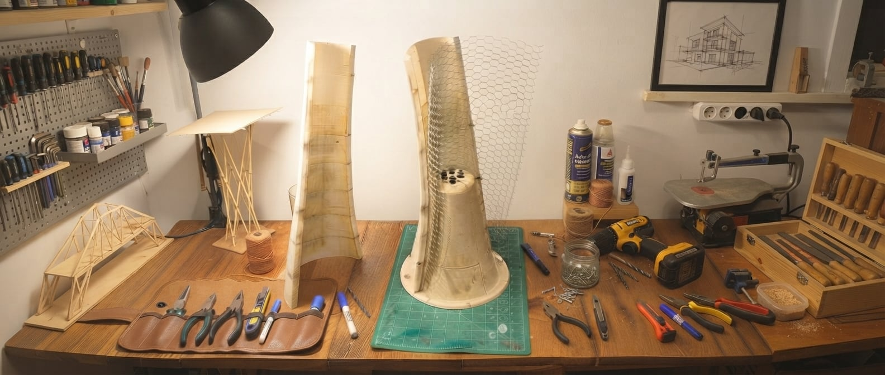

Leer el lugar
Contexto, uso y carácter orientan cada decisión.
Observamos relaciones, probamos posibilidades y convertimos decisiones de diseño en soluciones construibles.
Conoce nuestro enfoque
TALLER / MEDELLÍN PL—01Exploramos cada proyecto desde distintas escalas, anticipando cómo una idea se convierte en espacio, experiencia y materia.
Contexto, uso y carácter orientan cada decisión.
Geometría y datos revelan proporciones y oportunidades.
Modelos y herramientas inteligentes abren nuevas rutas de diseño.
Coordinamos información para decidir con claridad antes de construir.
Tres secuencias ilustran cómo una idea toma forma: estructura, ensamble y materia.